Software e IA
Automatizar trabajo repetitivo y conectar procesos.
Integro análisis de datos, desarrollo de software y comunicación digital. Investigo, comparo alternativas y construyo sistemas, interfaces y piezas visuales que se pueden evaluar.
Los problemas que abordo: datos difíciles de interpretar, procesos manuales y servicios que no explican bien su valor.

Automatizar trabajo repetitivo y conectar procesos.
Cruzar información y transformarla en decisiones.
Hacer sistemas e interfaces más claros y utilizables.
Explicar mejor una oferta y hacerla visible.

 AR/ — 001EDITORIAL · COMERCIO
AR/ — 001EDITORIAL · COMERCIO
Diseñé una tienda y un catálogo para 12 marcas y sus colecciones.
Ver qué hice, qué decidí y por qué ↗ AR/ — 002INTELIGENCIA TERRITORIAL
AR/ — 002INTELIGENCIA TERRITORIAL
Cruzo mapas y datos para investigar riesgos y apoyar decisiones.
Ver qué hice, qué decidí y por qué ↗ AR/ — 003AGENTES · GOVERNANCE
AR/ — 003AGENTES · GOVERNANCE
Diseñé cómo revisar tareas y evidencias de agentes de IA.
Ver qué hice, qué decidí y por qué ↗ AR/ — 004BRAND / DIGITAL
AR/ — 004BRAND / DIGITAL
Construí un sitio que explica servicios y facilita el contacto.
Ver qué hice, qué decidí y por qué ↗CRUZAR DATOS.
ENCONTRAR SENTIDO.
Busca por nombre o área. Abre cualquier tarjeta para ver qué hace, qué problema aborda y la evidencia disponible.
No hay proyectos con esos filtros.
No empiezo por la herramienta. Primero defino qué necesita resolverse, qué datos existen y qué puede comprobarse.
Observar el problema, las restricciones y las personas involucradas.
Explorar datos, referencias y alternativas que merezcan una prueba.
Desarrollar interfaces, prototipos, sistemas o contenido listo para evaluar.
Separar lo demostrado de las hipótesis y documentar qué falta por verificar.
De los contenidos digitales a las arquitecturas de software y sistemas de IA.
Entre 2018 y 2023 trabajé en comunicación institucional, contenidos y canales digitales; en 2024–2025 participé en comunicación de equipo. Hoy desarrollo productos propios que combinan análisis de datos, interfaces, automatización, dirección de arte y verificación de IA.
Ver perfil profesional, trayectoria y áreas de trabajoPodemos empezar por el problema, el objetivo y lo que necesitas mostrar o resolver.